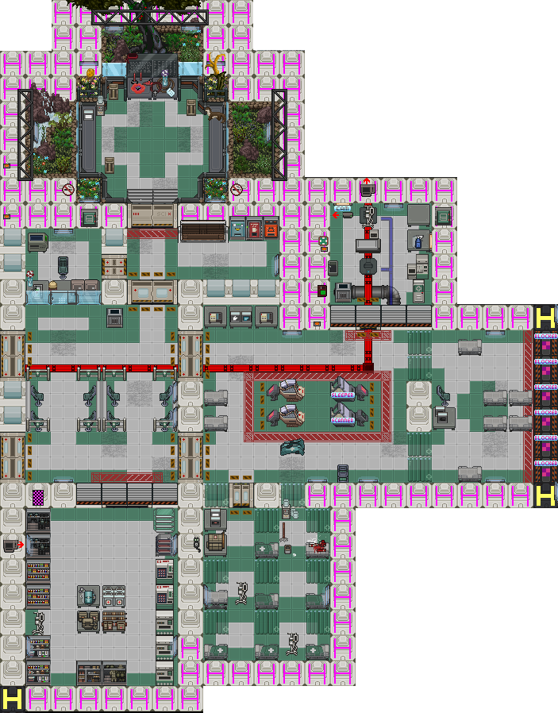

Руководство полевого санитара
Базовое руководство по медицине здесь.
Базовое руководство по хирургии здесь.
Ваша задача — поддерживать боеспособность отряда. Мертвый морпех не стреляет. Раненый морпех стреляет плохо. Ваша цель — сделать так, чтобы они стреляли хорошо и долго.
Медицинский отсек
После пробуждения и брифинга не спешите в общий арсенал. Ваше место — в медблоке. Здесь находится всё необходимое: специализированный арсенал, операционные, палата пациентов, криокапсулы и сканеры.

Экипировка и Снаряжение
Одежда и Броня
- Маркировка: В шкафу медика возьмите броню и шлем. ОБЯЗАТЕЛЬНО возьмите баллончик с красной краской и пометьте броню красным крестом. В хаосе боя это единственный способ опознать вас, если у бойца откажет рация.
- Шлем: Медицинский шлем имеет встроенный сканер здоровья (Health HUD), позволяющий видеть состояние бойцов на расстоянии.
Выбор рюкзака
Рюкзак (Backpack)
+ Большая вместимость.
- Долгое открытие (задержка).
Сумка (Satchel)
+ Мгновенное открытие.
- Меньшая вместимость.
Совет: Если вы уверены в своим менеджменте инвентаря — берите сумку ради скорости доступа к критическим предметам.
Пояс и Карманы
Рекомендуется M276 Pattern Lifesaver Bag. Он вмещает огромное количество медикаментов.
Стандартный набор медика
В вендомате возьмите набор медика. В нем содержится всё самое нужное для лечения:
- Стерильные боевые перчатки
- 2 Аптечки первой помощи
- Хирургический набор
- Анализатор здоровья
- 2 Каталки
- Хирургическая и синтетическая нити
- Дефибриллятор
- 2 пакета крови (O-, универсальная)
- Фонарик-ручка
- Стетоскоп
- Инъектор адреналина
- 2 Медэвака
- 2 Стазис-мешка
- Зашифрованный ключ рации медицинского канала
Подготовка к бою
- Ключ шифрования: Вставьте медицинский ключ в гарнитуру. Канал:
:mили:ь. - Оптимизация: Опустошите пару аптечек и заполните их продвинутыми наборами лечения из вендоматов, чтобы сэкономить место.
- Мощные лекарства: За очки купите улучшенные версии лекарств в вендомате с лекарствами.
- Координация: Договоритесь с другими медиками о тактике. Например кто кого лечит, кто находится на передовой, а кто в тылу, вызовы по рации, сокращения и прочее
- Эвакуация: Если есть пилот, возьмите носилки для медэвака. Они позволяют отправить раненого на корабль (работают только под открытым небом!), освобождая вас для других пациентов.
- Логистика: Составьте список необходимых лекарств для командира отделения (для сброса припасов) или соберите собственный ящик, который можно будет десантировать позже (так же предупредите командира отделения).
- Капельница: Возьмите одну или несколько на шаттл. Это спасет вам время при переливании крови.
- Оружие: M49A со смарт-прицелом. Вы всегда в тылу, смарт-прицел поможет не задеть своих, а расширенные магазины компенсируют малое количество места.
- Тестовая кукла: В медблоке есть настраивамая кукла для операций на которой вы можете отточить свои навыки хирургии.
Тактика в бою
Дефибрилляция
Если у бойца остановилось сердце, вы всё ещё можете вернуть его в мир живых.
- Убедитесь, что тело имеет менее 200 ед. общего урона(урон гипоксией не считается) используя анализатор.
- Снимите с тела броню (бронежилет не проводит ток).
- Возьмите дефибриллятор в обе руки (активируйте кнопкой Z, чтобы достать электроды).
- Кликните по пациенту и ждите разряда.
Сортировка
Не лечите всех подряд. Расставляйте приоритеты:
- ОСТАНОВКА СЕРДЦА (Требуется дефибрилляция).
- ВНУТРЕННЕЕ КРОВОТЕЧЕНИЕ (Требуется операция).
- ЗАРАЖЕНИЕ КСЕНОМОРФОМ (Требуется извлечение личинки).
- КРИТИЧЕСКОЕ СОСТОЯНИЕ (Сильные раны, переломы).
- ЛЁГКИЕ РАНЕНИЯ (Могут подождать).
Диагностика без сканера
Портативный анализатор не показывает повреждения органов. Используйте инструменты:
- Стетоскоп: Примените на грудь, чтобы проверить сердце и лёгкие.
- Фонарик-ручка: Направьте в глаза (через куклу), чтобы проверить повреждения мозга или глаз.
Советы опытного санитара
- Голокарты: Используйте их для пометки статуса пациентов, особенно если вы не единственный медик.
- Стазис-мешки: Они замедляют кровотечение и (важно!) развитие личинки ксеноморфа. Используйте их если у вас слишком много пациентов или для транспортировки тяжело раненных в безопасное место.
- Скрытая угроза: Личинка ксеноморфа НЕ ВИДНА на портативном сканере. Если видите бойца без шлема, пришедшего из глубины улья — допросите его или просканируйте в стационарном сканере (если есть).
- Зарядка: Ищите зарядные устройства в зданиях для подзарядки дефибриллятора. Попросите инженера запитать их.
- Личная безопасность: Держите в кармане экстренный инъектор или его самосборный аналог. Если вас ранят, вколите его в себя, чтобы выиграть время для самолечения.
- Младшие медики: Если к вам приставили пехотинца-помощника, используйте его для помощи в перевязке пациентов. Так же он может помочь вас реанимировать. Не доверяйте ему сложные операции.
- Координация: Не лечите пациентов друг друга. Если медик только, что выдал лекарства, они не сразу отобразятся на анализаторе, таким образом вы просто доведёте бойца до передозировке и придётся тратить драгоценные лекарства на откачку
И помните: Морпехи не отличаются умом и инстинктом самосохранения. Вам придется бегать за ними, чтобы спасти их жизни. Это нормально.